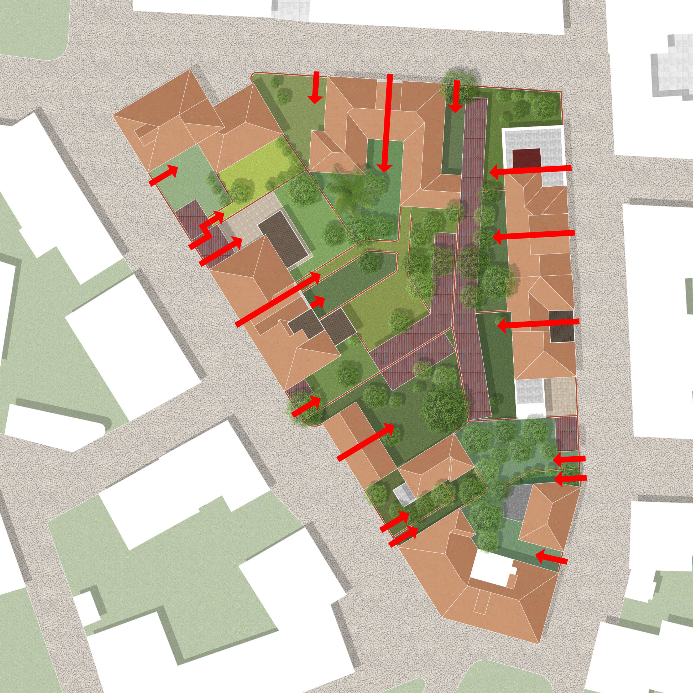
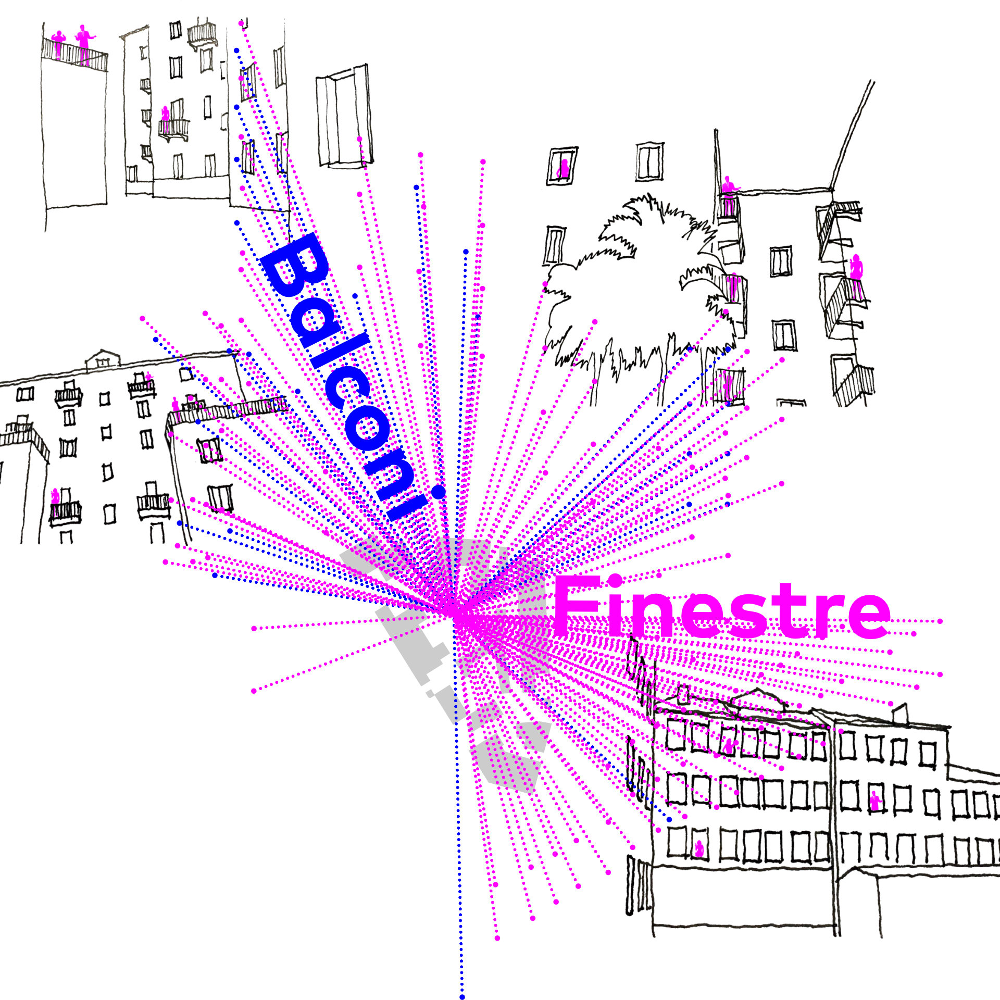
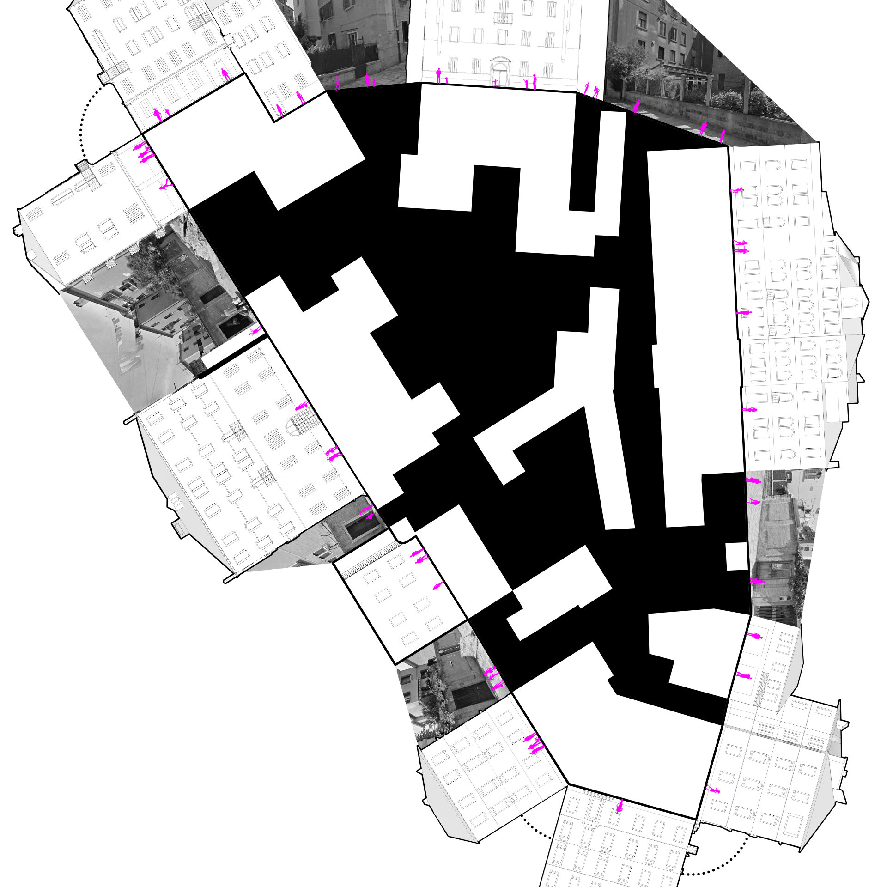

Analisi di Sant'Elena
2022
⬤ Im Kontext der Architektur-Biennale 2021 "How will we live together?" dokumentierte diese
Semesteranalyse die viertägige Exkursion nach Venedig. Ziel war die Erfassung der lokalen,
sozialen und räumlichen Verhältnisse des Randbezirks Sant'Elena als Grundlage für gemeinsame
Entwurfsprogramme.
Durch Skizzen, Diagramme und Interviews wurde der Stadtteil über reine Dokumentation hinaus
analysiert. Sant'Elena zeigt als periphere Wohngegend mit hohem Grünanteil und alternder
Bevölkerung (Ø 55 Jahre) Potenzial für großzügige Versammlungsarchitektur inmitten der
Überalterung und Entvölkerung Venedigs. Soziale Strukturen sind durch Nachbarschaftsinitiativen
geprägt, räumlich durch großzügige Freiräume und venetianische Baustrukturen.
Parallel wurden historische (Scuole Grandi) und zeitgenössische Versammlungsarchitektur
(Corderie dell'Arsenale) analysiert. Die Auswertung bis Dezember identifizierte drei Bauplätze
auf Sant'Elena für großzügige Wohn- und Gemeinschaftsarchitektur, die Biennale-Themen lokal
konkretisiert.
Die Arbeit schafft die programmatische Grundlage für individuelle Entwürfe, die Verbindung über
soziale Gräben hinweg in großzügigen Räumen ermöglichen – direkt aus der Sant'Elena-Analyse
abgeleitet.
⬤ In the context of the 2021 Architecture Biennale “How will we live together?”, this semester
analysis documented the four-day excursion to Venice. The aim was to record the local, social,
and spatial conditions of the outlying district of Sant'Elena as a basis for joint design
programs.
Through sketches, diagrams, and interviews, the district was analyzed beyond mere
documentation. As a peripheral residential area with a high proportion of green space and an
aging population (average age 55), Sant'Elena shows potential for generous assembly architecture
amid the aging and depopulation of Venice. Social structures are characterized by neighborhood
initiatives, spatially by generous open spaces and Venetian building structures.
At the same
time, historical (Scuole Grandi) and contemporary assembly architecture (Corderie dell'Arsenale)
were analyzed. The evaluation up to December identified three building sites on Sant'Elena for
spacious residential and community architecture that concretizes the Biennale themes locally.
The work creates the programmatic basis for individual designs that enable connections across
social divides in spacious rooms – derived directly from the Sant'Elena analysis.
Prof. Dr. H. Trapp
Prof. Dipl.-Ing. G. Flora